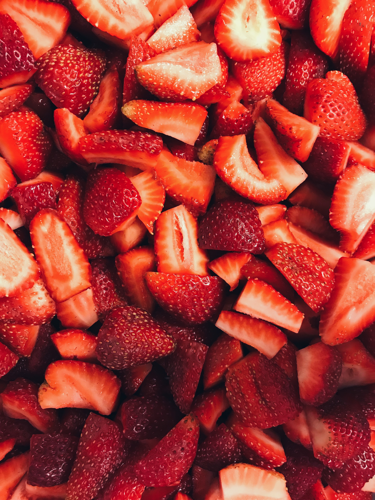
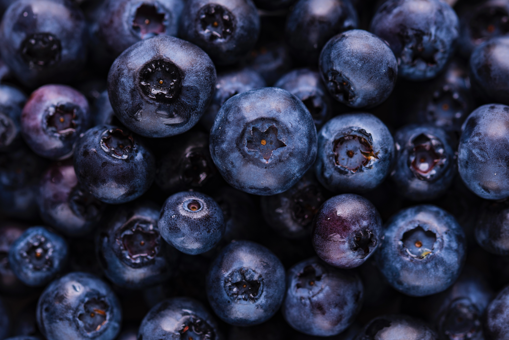
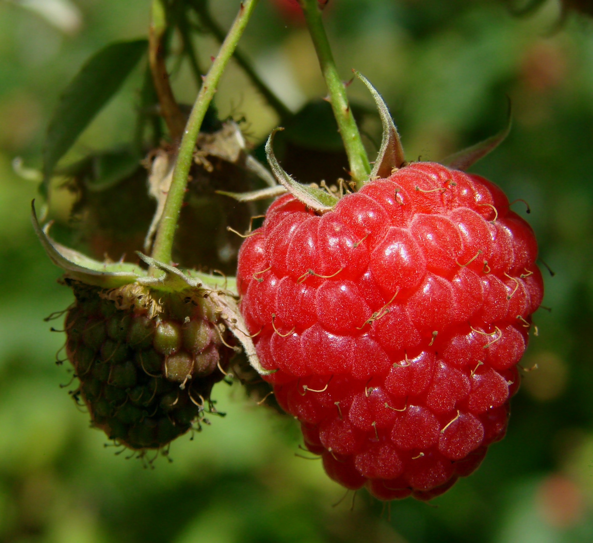
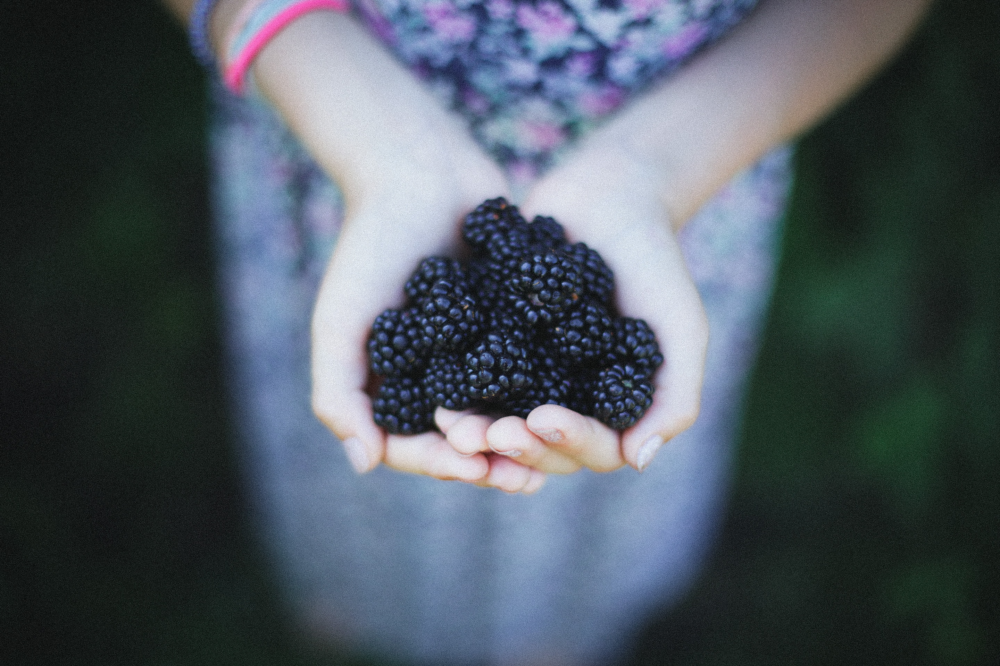
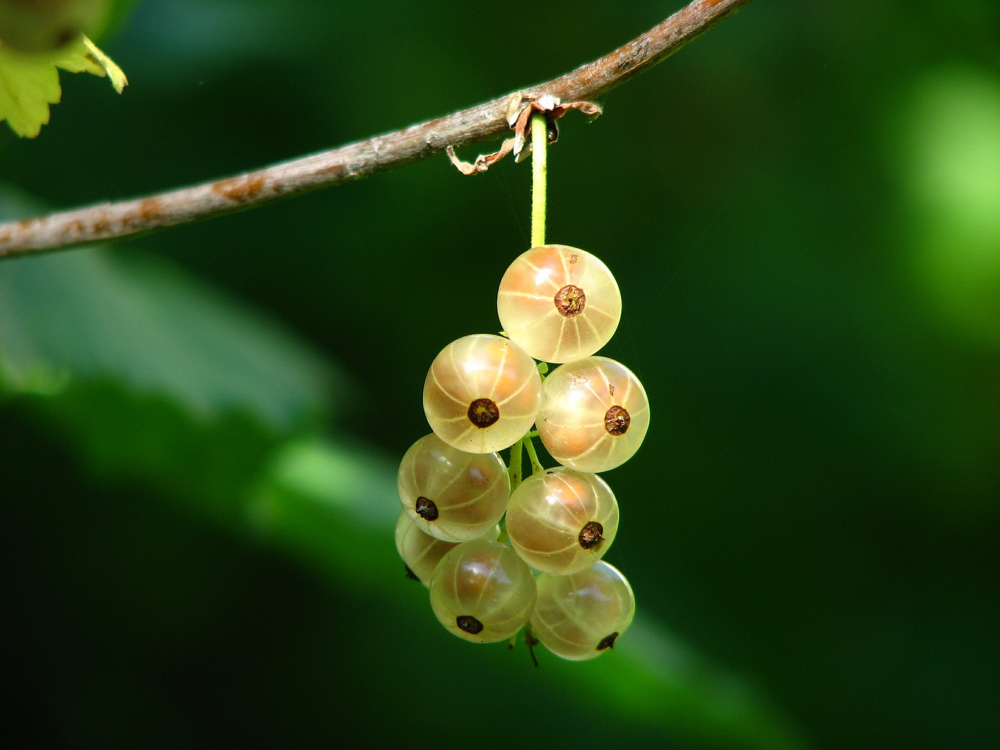

Here we go

-There are 200 seeds on an average strawberry.
-There is a museum in Belgium dedicated to strawberries.
-One acre of land can grow about 50,000 pounds of strawberries.

-Blueberries take 4 minutes to freeze.
-A single blueberry bush can produce as many as 6,000 blueberries per year.
-Blueberries are one of the only foods that are naturally blue in color.

-Raspberries are a concentrated source of vitamin C, containing 40 percent of a person’s daily needs.
-Raspberries have been crossed with other berries to form new species, such as the boysenberry and loganberry
-The term “raspberry” for a flapping noise made with the tongue and mouth seems to have originated in the Cockney dialect of England.

-Blackberries have been used by women in labor to help relieve labor pain, as they have high levels of vitamin K, which can act as a muscle relaxant.
-There are around 375 species of blackberry.
-According to some traditions, a blackberry’s deep purple color represents Christ’s blood and the crown of thorns was made of brambles, although other thorny plants, such as Crataegus (hawthorn) and Euphorbia milii (crown of thorns plant), have been proposed as the material for the crown.

-Gooseberries are extremely hardy and are grown almost as far north as the Arctic Circle.
-The health benefits of gooseberries include healing from harmful UV ray damage, good for the formation of red blood cells, helps boost the immune system of the body, reduce the risk of strokes and heart diseases, and promote good eye health.
-The gooseberry is a straggling bush growing to 1.5 meters (5 feet) in height and width, the branches being thickly set with sharp spines, standing out singly or in diverging tufts of two or three from the bases of the short spurs or lateral leaf shoots.